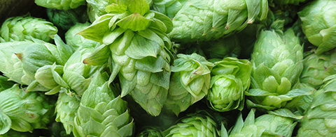

The Brew Diary
| Home | About Us | Flavor | Recipes | Diary |
|  |
Brew

I’ve been making my own beer for the past year or two. I’ve been lucky though. We have a large group of friends to help us drink it all. It’s allowed me to brew a batch every month or so to get my technique down, so to speak. I’ve actually gotten pretty good at it. The quick turnaround time has allowed me to practice, experiment and practice some more.
Favorite Recipes
- Amarillo Blonde Ale
- Smoked Bass & Hops
- Punching Pumpkin Ale
- Left-hand Milk Stout Clone
In the Primary
- Amarillo Blonde Ale
In the Secondary
- Amarillo Blonde Saison
In the Pipeline
- Smoked Bass & Hops